News
-
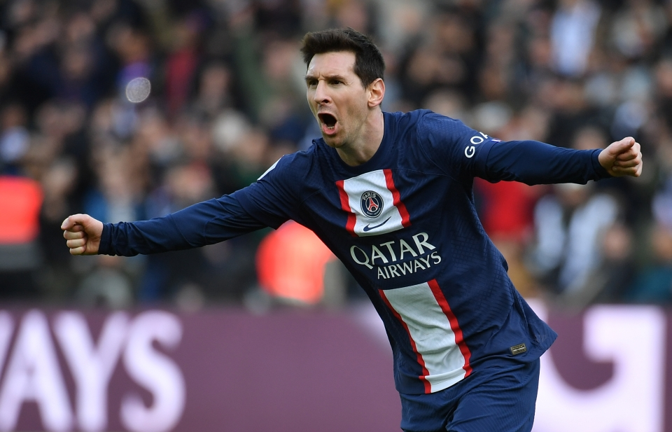
Everything You Need to Know About Gold Medals
Messi signed a two-year deal with PSG in the summer of 2021; his term is up for renewal in June, but negotiations are at a standstill right.
Lionel Messi finally signed his eagerly anticipated Paris Saint-Germain contract on Tuesday night to complete the move that confirms the end of a career-long association with Barcelona and sends PSG into a new era.The French club said in a statement that the 34-year-old Argentina star signed a two-year deal with the option for a third season. “I am excited to begin a new chapter of my career at Paris Saint-Germain," Messi said. "Everything about the club matches my football ambitions. I know how talented the squad and the coaching staff are here. I am determined to help build something special for the club and the fans, and I am looking forward to stepping out onto the pitch at the Parc des Princes.”
No salary details were given, but a person with knowledge of the negotiations earlier told The Associated Press that Messi is set to earn around 35 million euros ($41 million) net annually. The person said on condition of anonymity before the contract was signed. “I am delighted that Lionel Messi has chosen to join Paris Saint-Germain and we are proud to welcome him and his family to Paris," PSG chairman Nasser Al-Khelaifi said. "He has made no secret of his desire to continue competing at the very highest level and winning trophies, and naturally our ambition as a club is to do the same.”23rd, Feb 2023
-

After winning the chaotic F1 Australian GP, Max Verstappen criticizes the FIA
Max Verstappen has led a swathe of driver criticism of the decision-making at the Australian Grand Prix after the race was stopped three times because of incidents on track.
Max Verstappen has led a swathe of driver criticism of the decision-making at the Australian Grand Prix after the race was stopped three times because of incidents on track. The world champion dismissed it as a mess and accused the FIA, the governing body, of being responsible. Verstappen won in Melbourne with a dominant display but only after three red-flag stoppages, chaos and confusion and the race finishing behind the safety car. The second red flag with four laps to go led to a standing restart from which there were multiple incidents, causing another stoppage and a further 30-minute delay.
“I am very happy to have won, but the race towards the end was a bit of a mess,” he said. “I just didn’t understand why we needed a red flag. It left a lot of drivers confused. If we would have had a safety car and then a normal rolling start we wouldn’t have had all these shunts and then you have a normal finish. So they created the problems themselves. “We’ll talk about it, I think it left a lot of drivers confused about why we needed a red flag. We’ll talk in Baku.” Questions were also raised as to whether the stoppages, which close the field up and are followed by dramatic standing starts, were being employed merely to improve the spectacle, with six drivers involved in incidents after the second restart.
22th, Feb 2023
-
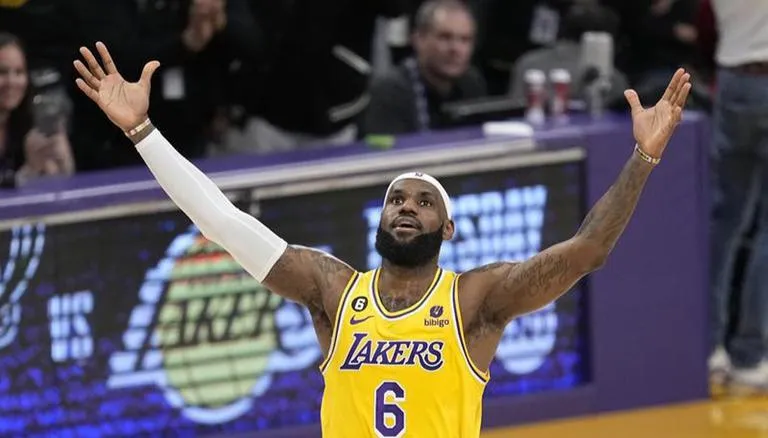
NBA FACT OR FICTION: LeBron James' Lakers benefit from a vast free-throw discrepancy
Let's get this out of the way right away: I think there are good reasons to question the integrity of referees prior to Tim Donaghy's resignation due to a gambling controversy given the egregiousness of calls in a number of NBA playoff games from the early 2000s.
I reviewed the NBA's last two-minute reports and created the Restless Nights Index at the time to illustrate how ludicrous that statement was. In the aftermath of that game — one in which the league admitted to blowing the call in question and another that aided the Lakers in the final seconds of regulation — James' team was one of five that actually benefited from bad whistles late in close games at least 59% of the time. They remain top five in that respect, and only the two teams that met in last year's Finals — the Celtics and Golden State Warriors — have been on the better side of more blown calls per game in clutch situations. An updated table of the number of close games for each team, the total amount of incorrect calls or no-calls in those games, the number of those calls that went in favor of each team and the percentage of favorable calls that each team received:15th, Feb 2023
-
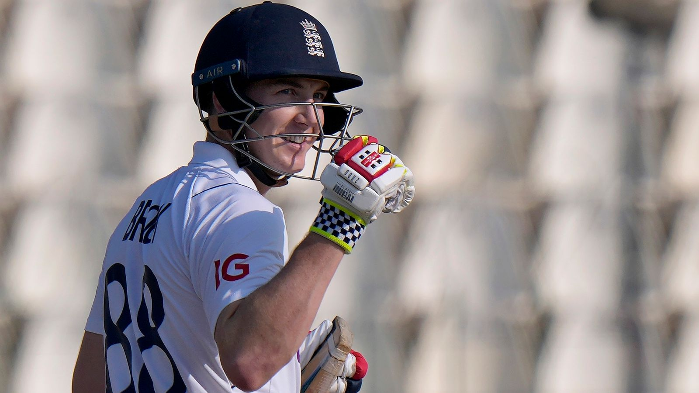
How Harry Brook set a lofty goal, squandered it, then went off like a rocket
But, Brook's path to the top has not been easy, like so many sudden triumphs. After his bold attempt to quickly advance into contention as a Test opener failed in 2019.
The past 12 months have exceeded even Harry Brook's wildest expectations. In addition to winning the T20 World Cup, receiving Player of the Series honors for his performance during England's Test tours of Pakistan and New Zealand, and signing an IPL contract with Sunrisers Hyderabad for a staggering US$1.6 million, the third-highest sum paid by an IPL franchise for an English player, behind Sam Curran and Ben Stokes, the player has achieved numerous other achievements.
But, Brook's path to the top has not been easy, like so many sudden triumphs. He was dropped from the Yorkshire first team in 2019 when his bold attempt to quickly advance himself into consideration as a Test opener failed, and he was forced to work his way back in by collecting runs for the second team.27th, Feb 2023
-

Maguire's dilemma: Should the Man United club captain leave this summer or fight for his place?
Harry Maguire will encounter a familiar situation when he returns to Manchester United ahead of their trip to Newcastle United this weekend after playing every minute of England's two Euro qualifiers during the international break. Maguire, who is currently all but guaranteed a spot in Gareth Southgate's lineup, must wait anxiously to learn whether he will make his Saint James' Park debut against Erik ten Hag on Sunday.
Rafael Varane's availability will largely determine his chances of succeeding after sitting out United's most recent match, a 3-1 victory over Fulham, due to injury. Varane and fellow World Cup winner Lisandro Martinez are Ten Hag's favoured center-back pairing; as a result, club captain Maguire has spent the majority of the season in that position.
Ten Hag hasn't tried to hide that Varane and fellow World Cup winner Lisandro Martinez are his preferred partnership at centre-back, an arrangement that's meant club captain Maguire has spent most of the season out in the cold. It leaves the 30-year-old with a decision to make in the summer: either stick it out as a bit-part player at Old Trafford, or leave in search of regular football elsewhere.
It says everything about Maguire's predicament that despite playing a part in England's first win in Italy since 1961 on Thursday, he still felt the need to come out fighting after the match.
Ten Hag has been largely supportive of Maguire since taking over as manager, but for many fans, the centre-back remains a symbol of the team that fell apart under Ole Gunnar Solskjaer and Ralf Rangnick before the Dutch manager arrived. Maguire was keen to accept the captaincy when it was offered to him by Solskjaer following his £80 million move from Leicester in 2019, but according to sources, it has come with more pressure and scrutiny than he expected.
Maguire lifted his first trophy as United captain in February after a 2-0 win over Newcastle, but it was shared with stand-in skipper Bruno Fernandes after Maguire was only asked to play the final two minutes. The England defender started United's last two games against Real Betis and Fulham, but it was the first time since August he was picked for consecutive matches. He has made just five Premier League starts all season, and two of those were the back-to-back defeats to Brighton and Brentford at the beginning of Ten Hag's reign.1 hours ago
-
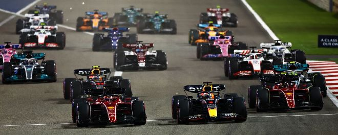
Formula Equal: Bid lodged for a 50:50 male, female F1 team to join in 2026
2 hours ago
Former British American Racing (BAR) founder Craig Pollock has confirmed he is looking to enter Formula One with a 50 percent male, 50 percent female team called Formula Equal. Pollock has submitted an expression of interest to racing's governing body, the FIA, who opened up the process for finding an 11th F1 team earlier this year.
"Our ambition to deliver and build opportunities and pathways for women to get to the very top level inside motorsports," Pollock told CNN Sport. "The concept and the idea was to try and build a Formula 1 team, 50 percent male, 50 percent female, which is extremely hard to do if you have an existing Formula One team; it's a lot easier with a clean sheet of paper." Pollock's BAR team raced in F1 between 1999 and 2005, before being purchased by Honda, which became the famous Brawn GP team in 2009 and then Mercedes from 2010 onwards. Pollock hopes to include a female driver in the line-up of his new venture, although he admits there are issues with doing that in the next few years.
"We know that we are going to have to go through our academy systems. We know we're going to have to build it up because there are not enough women at the moment who are trained up to the level of Formula One and they've got to earn a place in there at the same time". This year Formula One will launch its F1 Academy, a championship series primarily for teenage girls looking to start their journey up the pyramid.
The series will be closely affiliated with teams who make up the grid of the Formula 3 and Formula 2 feeder series, which F1 hopes will provide a clearer pathway to the top. Formula Equal hopes to be "the first Formula One team that is truly outside of Europe", with Pollock revealing that funding discussions have taken place with a Gulf state. Saudi Arabia Motorsport Company chairman HRH Prince Khalid bin Sultan Al-Abdullah Al-Faisal said during the recent Saudi Arabian Grand Prix that the nation hopes to have its own race team in the future. There have been a few notable expressions of interest about 2026. The bid which gained the most media coverage was the joint Andretti-Cadillac bid, although that was met with a lukewarm response from F1's existing 10 teams, who would still need to sign off any prospective 11th entry. There are lingering concerns over adding a new team into the mix and diluting the prize fund for the teams at a time when F1 is enjoying an unprecedented popularity boom. -
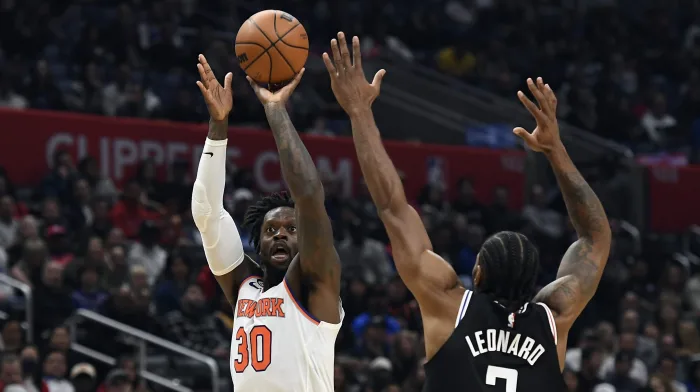
New York Knicks’ Julius Randle, NYC high schooler are making their 3-point shots count
3 hours ago
When Ayden Khalid initially heard about New York Knicks forward Julius Randle’s plan to donate $500 for every 3-pointer he made to the Earl Monroe New Renaissance Basketball School, the 3-point specialist at The Dalton School in New York wondered how he could be involved. “My main thing is shooting 3s, so I thought it would be pretty cool for me to do it as well,” said Khalid, 16, a junior at the private school that boasts CNN anchor Anderson Cooper and actor Tracee Ellis Ross among its notable alumni. “We notified the Monroe School, created a website and went on from there.” When Randle, who announced the program in November 2021, visits the Earl Monroe New Renaissance Basketball School on Tuesday afternoon, he’ll deliver a check for $880,000 that accounts for the 3-pointers he made last season.
Randle had long list of matching donors that included the Knicks, JP Morgan and the NBA Players Association. And standing with Randle will be Khalid, who’ll present the Monroe School a check for $12,090 for the 3-pointers he made during his just-completed junior season. “This is what New Yorkers are about — teammates and winning,” said Monroe who launched the charter school in 2021, with filmmaker Dan Klores. “Having all sorts of New Yorkers from companies, workers, students, fans, the Knicks and Ayden come together for ‘30 for 3’ shows people can work together in a truly meaningful way.” -
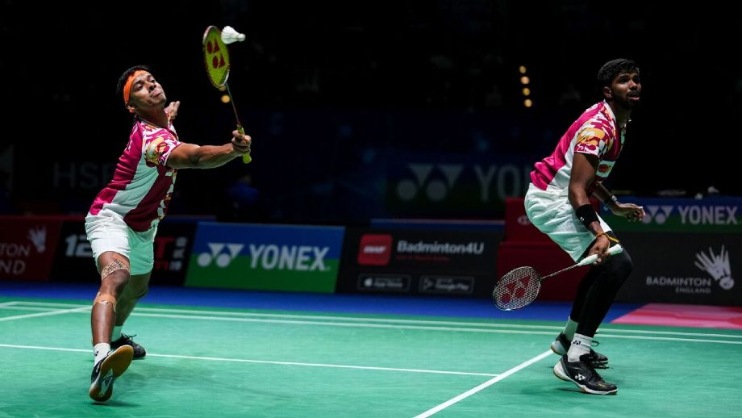
Swiss Open: Satwik-Chirag win men's doubles title
4 hours ago
In the Swiss Open 2023, a Super 300 competition, Satwiksairaj Rankireddy and Chirag Shetty defeated China's Ren Xiang Yu and Tan Qiang 21-19, 24-22. In a little under an hour, the world's No. 6 couple defeated the No. 21 pair. That was a commanding performance against a couple who hadn't lost a game all tournament. This was the seventh World Tour victory of Rankireddy-career Shetty's and their first BWF doubles victory of the year. The victory is a pleasant consolation after they failed to advance past the round of 16 in only one of five previous competitions in 2023. (when they lost the final of the Malaysia Open in the final). Up to this point, the season had been marred by injuries, with Rankireddy sidelined for
-
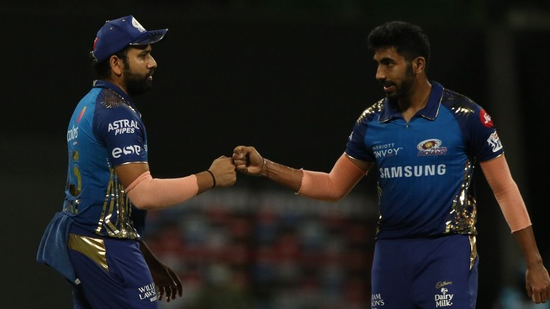
How will Mumbai Indians cope without Jasprit Bumrah?
8 hours ago
Rohit Sharma (capt), Suryakumar Yadav, Tim David, Dewald Brevis, Tilak Varma, Ishan Kishan (wk), Tristan Stubbs, Vishnu Vinod, Cameron Green, Arjun Tendulkar, Ramandeep Singh, Shams Mulani, Nehal Wadhera, Hrithik Shokeen, Arshad Khan, Duan Jansen, Piyush Chawla, Kumar Kartikeya, Raghav Goyal, Jofra Archer, Jason Behrendorff, Akash Madhwal Jasprit Bumrah is going to miss an entire IPL season for the first time since his debut in 2013, which will keep the fans waiting to watch him and Jofra Archer bowling in tandem for Mumbai. Bumrah's irreplaceable skills will give Rohit Sharma a headache, and his fast-bowling stocks have been depleted further with Jhye Richardson also ruled out of the IPL. Mumbai are yet to name replacements for the two quicks.
Apart from those two, the rest are available for selection. The South Africans Tristan Stubbs and Dewald Brevis are not picked for the Netherlands ODIs and hence will be available for Mumbai's first game against Royal Challengers Bangalore on April 2. -
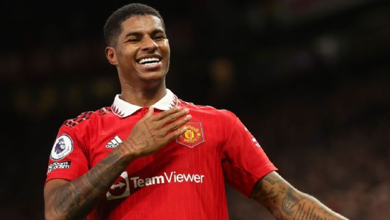
Man United to step up Marcus Rashford contract talks, eye departures in summer - sources
10 hours ago
United are looking for a striker ahead of the summer transfer window, but Rashford remains a key part of Ten Hag's plans. Sources have told ESPN that the club are ready to listen to offers for a number of senior players in a bid to increase the summer budget and navigate financial fair play constraints. Scott McTominay, who scored both goals in Scotland's 2-0 win over Spain on Tuesday, is wanted by Newcastle United, while there is also interest from the Premier League and Europe in Harry Maguire, Victor Lindelof and Dean Henderson. Eric Bailly and Alex Telles will be allowed to leave permanently after loan spells this season.
Anthony Elanga and Brandon Williams are likely to be made available on loan, and Phil Jones and Axel Tuanzebe are set to leave at the end of their contracts in June. Meanwhile, United are carrying out an internal investigation before making a decision on Mason Greenwood's future after criminal charges against the 21-year-old were dropped in February. Greenwood is under contract until 2025 but hasn't played or trained since January 2022. -
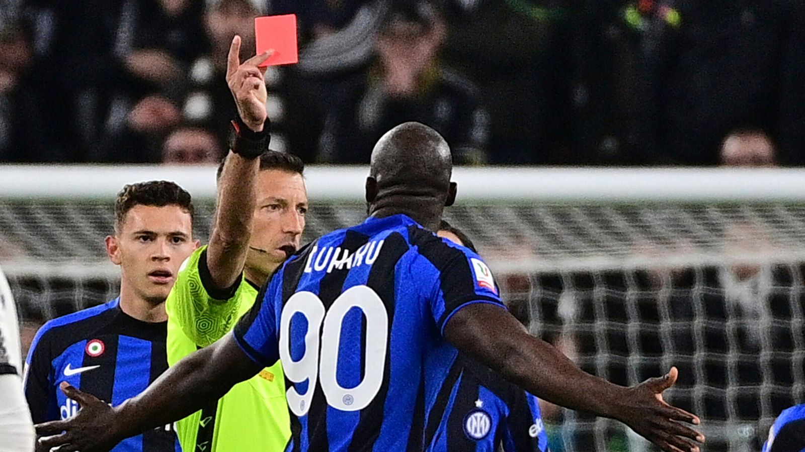
Romelu Lukaku: Inter Milan stirker racially abused during Coppa Italia clash at Juventus
12 hours ago
In a statement released late on Tuesday, US based sports agency Roc Nation - which represents Lukaku - demanded Juventus apologise to the striker. "Tonight's racist remarks made towards Romelu Lukaku by Juventus fans in Turin were beyond despicable and cannot be accepted," Roc Nation Sports International president Michael Yormark said. "Before, during, and after the penalty, he was subjected to hostile and disgusting racist abuse. Romelu celebrated in the same manner he has previously celebrated goals. The referee's response was to award a yellow card to Romelu.
"History repeats... Been through it in 2019.. and 2023 again..," Lukaku said in a post on Instagram on Wednesday. "I hope the league really take actions for real this time because this beautiful game should be enjoyed by everyone..." Inter also reiterated their stance against racism and expressed their support for Lukaku. "We want to firmly reiterate that we stand united against racism and all forms of discrimination," a statement read.
"Football and sport must not only be a place for emotion but also for clear and shared values, and what we saw last night in the final minutes of the Juventus vs Inter Coppa Italia semi-final in Turin has no place in our sport. "This is why we reiterate our support, affection and solidarity to Romelu Lukaku, just as the world of football is doing from all over since the incident. "Stay strong Rom, we stand with you!" Racism has been a long-running problem in Italian football and authorities have been criticised for not taking strong enough action. -
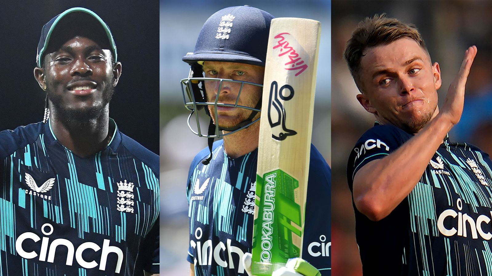
How are England shaping up for Cricket World Cup title defence after white-ball tour of Bangladesh?
1 day ago
Jos Buttler's side opened strongly, securing back-to-back wins in claiming a 2-1 ODI series win before a depleted T20 squad was swept aside in the shorter format. With no further white-ball cricket until August, how are the holders of both World Cups shaping up ahead of their 50-over title defence in India come October?
Instead of calling up a replacement, England went in to the T20 series light in the batting department, instead choosing to give their lower-order all-rounders - Sam Curran, Moeen Ali and 18-year-old debutant Rehan Ahmed - some greater exposure to the sort of tricky conditions that will be similar to those presented in India come the 50-over World Cup in October.
"I see what they're trying to do, but the short-term view and the long-term view, you've always got to balance that as a selector. These are not stupid people, Matthew Mott, Jos Buttler, Rob Key - they know what they're doing. "But I just think not having the extra batter sends the wrong message. You've got the three lions on your shirt; you're playing for England and Bangladesh deserve a bit of respect. "Pay attention to this game in front of you, and if you do that then the future will look after itself." -
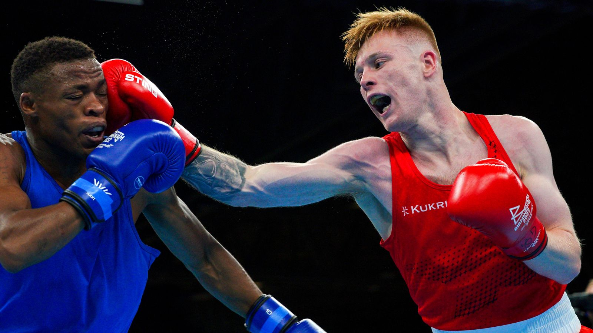
Great Britain will boycott the IBA men's World Championships amid crisis in Olympic boxing
2 day ago
The decision comes amid continuing concerns about boxing's future as an Olympic sport and the participation of Russian and Belarussian teams in the World Championships. The USA and Ireland are also among the countries not to enter the men's tournament, scheduled to run in Tashkent from April 30 to May 14.
A spokesperson for GB Boxing explained: "The decision reflects ongoing concerns about the future of boxing's place on the Olympic programme and the recent decision by IBA to allows teams of boxers from Russia and Belarus to compete under their national flags, which contravenes the International Olympic Committee's (IOC's) position on the participation of athletes from these countries.
"This has put further distance between IBA and the Olympic movement in addition to the significant, longstanding issues over sporting integrity, governance, transparency and financial management which the IOC has asked IBA to address to protect boxing's place on the Olympic programme. "GB Boxing condemns the Russian invasion of Ukraine and has solidarity with the people, boxers, coaches and officials of Ukraine." -
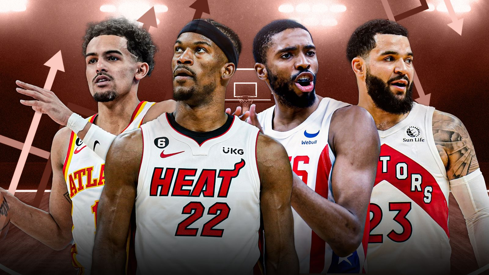
NBA Eastern Conference playoff and play-in race: Everything you need to know ahead of the final week of the season
2 days ago
Outside of the top six, those between seventh-10th will compete in a play-in tournament for the final two places in the post-season. If two teams finish with the same record, their position will be determined by a tiebreaker, the first of which is the head-to-head record between the sides.
The good times keep rolling on for Mikal Bridges, but the rest of his team-mates have not caught on yet. While the 26-year-old averaged a sizzling 28 points per game in March, the Nets failed to follow suit, winning just one of their last seven games.
Can they make it across the playoff line with the bits that work at the moment? Their 129-100 victory over the Miami Heat went a long way to making it happen; they have the tiebreaker in their hands now with the easiest remaining schedule in the NBA. They face the Minnesota Timberwolves next - a game that has permutations for all the competing teams - before playing against the Detroit Pistons, Orlando Magic, and Philadelphia 76ers. -
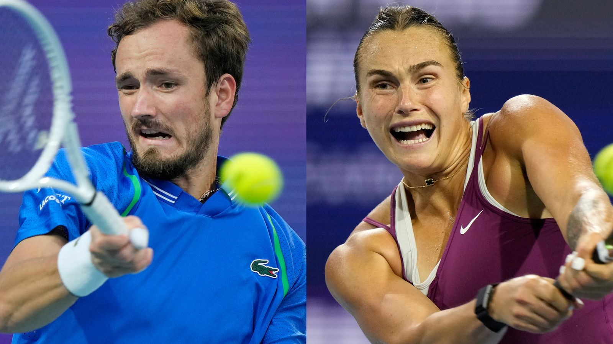
Wimbledon lifts ban on Russian and Belarusian players who will compete as 'neutral athletes'
3 days ago
Last year, players from Russia and Belarus were banned from Wimbledon in response to Vladimir Putin's invasion of Ukraine. The Lawn Tennis Association was hit with a fine and world ranking points were removed from last year's championships.
However, the decision has now been reversed and players from Russia and Belarus will be allowed to take part at Wimbledon this summer, subject to them competing as 'neutral' athletes and complying with appropriate conditions. The Lawn Tennis Association (LTA) said if the ban remained, there was "a real prospect of the termination of our membership", leading to the cancellation of events at Queen's, Eastbourne, Birmingham and Nottingham.
Ian Hewitt, chairman of the All England Club, said: "We continue to condemn totally Russia's illegal invasion and our wholehearted support remains with the people of Ukraine. "This was an incredibly difficult decision, not taken lightly or without a great deal of consideration for those who will be impacted.